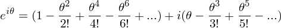
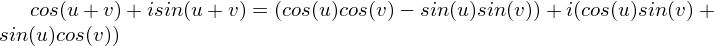

Euler's formula is this crazy formula that ties exponentials to sinusoids through imaginary numbers:
Does that make sense? It certainly didn't to me when I first saw it. What does it really mean to raise a number to an imaginary power? I think our instinct when reasoning about exponents is to imagine multiplying the base by itself "exponent" number of times. So, for instance, 34 would be 3*3*3*3. But this line of reasoning leads to a dead end when we have an imaginary exponent, so we can't use that definition of exponentiation. We'll have to use another definition to prove that this is true. So I will go ahead and prove it two different ways to convince you that it makes sense, and then I'll show how it actually makes life easier (in spite of how strange it may seem).
Now simplify all of the terms with powers of i in them, noting that i2 = -1:
Now group all of the even order terms together and all of the odd order terms together, noting that only the odd order terms have an i factor left:

You should now recognize a pattern here; all of the even powers form the Maclaurin series for cos(x), and all of the odd powers form the Maclaurin series for sin(x). Therefore, we have proved once again that eix = cos(x) + isin(x).
So hopefully now you can buy Euler's formula; if not at a concrete level, at least at some abstract level by noting that everything "works" mathematically if you accept that i is the square root of -1. Now it's difficult to try to visualize it unless we come up with some conventions. For this, we first need to remember how to plot complex numbers in rectangular form. We normally visualize complex numbers in 2D by convention, plotting the real component on the horizontal axis, and the imaginary part on the vertical axis. For instance, the complex number, 4 + i, would be plotted as follows:
If we adapt this convention, we notice that the components of e^(ix) in the complex plane are (cos(x), sin(x)). Thus, feeding different x values to Euler's formula traces out a unit circle in the complex plane. In this manner, Euler's formula can be used to express complex numbers in polar form. We simply give a magnitude, A, and an angle, theta, that a complex number makes with the real axis (the arc tangent of the imaginary over the real component), and we can express it using Euler's formula. For instance, we can express the number (1 + i) as:
...where A is sqrt(2) and theta is 45 degrees in this case
Euler's Formula makes it really easy to prove complicated trig identities, because we now get to use properties of exponents to help us out. Let me show you a quick example:
Proof:
Therefore, we end up with:

Now grouping both parts together:
and...
To get the other part of the "plus or minus," plug in (-v), noting that cos(-u) = cos(u) [the cosine is an even function] and sin(-u) = -sin(u) [the sine is an odd funtion]:
and...
The normal way to prove it with trig is much more complicated (I don't even feel it's worth writing down here right now). But this identity is very important, and we will need it later when we talk about phasors in another tutorial.
One more quick note about how to write sine and cosine in terms of euler's identity. These formulas rely on the fact that cosine is even (cos(x) = cos(-x)) and sine is odd (sin(x) = - sin(-x)). The goal will be to use these facts to our advantage to cancel out the sine when we're trying to get the formula for the cosine, or vice versa: